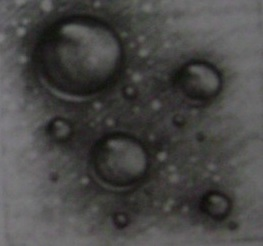

Hayatta her şeyi öngörmek mümkün değildir. Daima kendimizi ruhen hazırlama şansı bulamadığımız sürprizler, acil durumlar ve beklenmedik felaketlerle karşılaşırız. Her tür sürpriz stres yaratabilir (beklenmedik bir evlenme teklifi de, ani bir ayrılık da). Kontrol edemediğimiz ya da öngöremediğimiz çok fazla şey vardır. Birtakım huylar geliştirmemizin ve hayatımızı bazı kalıplara göre düzenlememizin nedenlerinden biri de budur.
Fırtına çıktı. Aniden bastıran sağanakta yürüyorsunuz. Son sürat koşsanız bile gideceğiniz yere beş dakika uzaklıktasınız. Aşağıdakilerden hangisi yapacaklarınızı en güzel tanımlayandır?
1. "Büyük bir ağaç bulup yağmur dinene kadar altında beklerim."
2. "Yağmurun ne kadar süreceğini bilemiyorum, bu yüzden gideceğim yere kadar koşarım."
3. "Şemsiyesini paylaşabileceğim biri ya da şemsiye alabileceğim bir dükkân olup olmadığına bakarım."
4. "Çantamda daima katlanabilir bir şemsiye taşırım, onu kullanırım."
